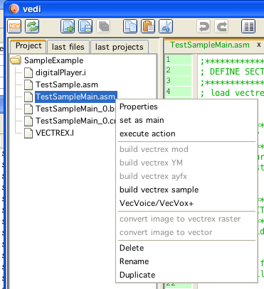

build samples in vedi
Samples and sample playing code is generated in vedi, using the popup on the project file tree. By chosing the entry "build vectrex samples" the dialog for sample generation is displayed. (see also the vedi→Samples documentation)
build samples in vedi

samples dialog
Exiting the above dialog with "create source" will (...hm...) create sources in the current project directory.
(After asking for a name for the file which is to be generated. In the following it is assumed that the name given is "TestSample".)
The generated sources are accompanied by an example player program.
Following sources are generated:
digitalPlayer.i
the subroutines which do the actual playing of samples
VECTREX.I
which is needed by the player
TestSample.asm
a file with the actual sample data
TestSampleMain.asm
a "main" file, with an example vectrex runnable "cartridge" file
A vectrex playable binary file can be generated by setting the generate SampleMain file as the main file in the project.

set example player as main
The format and the actual play routines are documented in the source code. Just a few bullet points...
the provided sample player routines do not use the PSG chip
the digital audio data is send through the DAC, the resulting analog voltages are transfered by the correct MUX settings directly to the sound hardware
playing samples this way on (what I think) new vectri (3rd generation) results in very low volumes, this seems to be hardware related
the provided sample routines play the data backwards
the sample "generator" can build samples in different sample rates. The higher the sample rate the better the quality. The higher the sample rate, the more memory is used. The higher the sample rate, the more cycles the player routines must use. So - you have to experiment yourself what is your threshold for quality.
the provided sample routines are "general" if you plan to do your own game with samples, you probably should fit them to your specific needs.
the general idea is, that you have to feed the audio hardware with samples in respect to the current sample rate (you get the idea, sample rate of 5000 → you have to update the audio hardware 5000 times per second)
the best quality is provided if your routines concentrate only on feeding the audio hardware
but: most of the time you also want to draw something
some routines are provided (String printing, and vectorlist drawings) which also do screen updates and (roughly) update the audio hardware in time
this updating - depending on the stuff that is written or drawn - does not always come "in time" for that reason the quality is not "perfect", but most of the time at least "ok"
Provided subroutines, that also play sample data "in between" when needed: wait_recal_digitj intensity_a_digitj move_to d_digitj draw_vlc_digitj Print_Str_digit
The sample generator generates:
Data - TestSample.asm
the data of the sample (backwards) and labels for the data
LabelNames: TestSample_data, TestSample_data_start, TestSample_data_end
a memory word location with the length of the sample
LabelName: TestSample_length
a constant which defines the sample rate:
ConstantName: TESTSAMPLE_SAMPLERATE
Subroutines - digitalPlayer.i
this file contains above mentioned routines
also included are macro definitions and calculations in respect to the sample rate of the data
in the file there are also RAM locations used, for the default example these start at $c880. 12 bytes are needed. You can easily change these values - see top of the file.
sample setup is done by the subroutine, init_digit_sound with parameters D = sample start, and X pointer to sample length
subsequent calling of any of the "..._digit" functions plays the sample
there is one other flag that can be set: → the RAM location digit_looping if set to 1 than the sample will be looped, if 0 than not
Example - TestSampleMain.asm
this is the main program, that can be assembled to a vectrex binary
this is pretty straight forward - just read it...
(not further mentioned, but also generated: "VECTREX.I")

sample data that is generated

example that is generated (sample is looping)

start of digitalPlayer.i